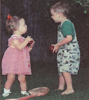

Hair-Brained?
The Carpenter family found hair clipping keep deer away from fruit trees; Lynn Grow discovered a yellow bow deters squirrels from her bird feeder; Karen Ann Bland buys mismatched china at garage sales and gives them away after pot luck meals; John Morton makes home insulation with Borax; Nancy Markley recovers her outdoor lawn furniture with denim material.
By the Mother Earth News editors
October/November 1997
Country Lore
Is using hair as a deer repellent an old wive's tale?
The reader research is in.
Hairy Solution
I have an idea that has finally proved able to keep deer away from our orchard. Now, I have no problem with them taking a snack, but since they don't pitch in on a great deal of the work, well.... The dilemma has always been that we do enjoy them on the property and like to watch them drink from the pond during breakfast in the early morning. After having very little success, we "accidentally" stumbled across an idea that protects the tress and permits the deer to wander around. It works, costs next to nothing, and doesn't use chemicals or pesticides.
Our dwarf apple trees are treated to a thin layer of compost every so often. Since our compost is an amalgamation of almost everything, our son at one point added the refuse of hair clippings to it after one of our monthly Saturday "haircuts en masse" rituals. Though I won't vouch for their compostability, we did find that deer would not go near the compost with hair in it. We think the oils or the smell or something has to do with it but haven't honestly researched it much. Lots of rain or heavy wind will disperse the hair, so now we go to our local barber, who has expressed nothing but the highest spirit of cooperation in supplying us with all the hair we want to bag and haul off.
Additionally, in later fall when stores are almost giving away their unsold trees, we bought three "deer apple trees" and planted them away from the orchard towards the back our property because our son thought they deserved some, too. It works great for our family, and we wanted to share it with other readers who might benefit as well from our accidental discovery.
-Jacquelyn, Maria, Nicholas, and Ron Carpenter
Lawton, OK
Just tie a yellow ribbon...
A customer told me she tied a big bow on top of her birdfeeder for a Christmas decoration and discovered it repelled the squirrels. So I put a bow atop my feeder, and sure enough, they come down the wire as far as the bow and then turn right around and leave. Of course, the feeder has to be placed so they can't jump on it from below.
-Lynn Grow
Plymouth, MI
Karen's Tips
1. When I go to garage sales, I often buy a whole box of mismatched china pieces for as little as $1.00. I use them for taking food to a potluck event. After the meal, I tell the hostess to keep the dish. We're both winners because she has a new dish, and I don't have to take a dirty one home.
2. Here's how to make sure your kitchen food measuring scale is accurate: place nine pennies on the scale-they should weigh one ounce.
3. To end the mess of dry soil running out of the drain holes in the bottom of the pots when repotting plants, keep a supply of coffee filters on hand and drop one in the bottom of each pot first. This keeps the soil in when repotting and while watering.
-Karen Ann Bland
Gove, KS
Easy Insulation
An old MOTHER issue [December, 1977, issue #48] showed how to make insulation from newspapers. The article suggested using a hammer mill to grind the newspaper and mixing borax with it to make it fire-resistant.
For anyone who is without a hammer mill and wants to insulate an attic, I'd like to suggest a simple and safe alternative:
1. Pour a few pounds of borax and a few gallons of water into a washtub or bathtub.
2. Stir it several times during the next few hours (or days). If all the borax dissolves, add more.
3. Soak your old paper in the borax solution. Be sure it all gets wet.
4. Drain the papers and dry them on a clothesline.
5. Use a match to test the paper for fireresistance.
6. Wad the sheets of paper and toss in the attic.
When the insulation is about a foot deep, your insulation will make your house safer and more comfortable. Also, wadding all that paper may make you stronger, healthier, and better looking.
-John Morton
Waco, TX
Denim Furniture
When we moved to our farm after my husband lost his job, I insisted that I had to take my wrought iron porch furniture. It had taken me three years and too many after-season sales to simply leave it behind. Well, it wasn't long before farm life had taken its toll on what was left of my cushions. Since money was at a premium, and still is, I asked my enterprising husband, "What do we have a lot of around here that I could use to cover the cushion?" He replied, "The only thing I can think of is worn-out blue jeans." Well, that was the answer! Our dear 86-year old Aunt Hazel, who is now gone, helped me cut the jeans to make the covers. On the lounge chairs, we pieced (by machine, for sturdiness) four-inch squares of denim. For the other chairs and couch, I used the unworn sections of the legs of the jeans. We tried to alternate the colors. Some were more faded than others, and we found different brands washed out to several attractive shades of blue. Some of the sections of the jeans we used still had the print of where I removed the pockets, a look I also found to be pleasant.
Trips to yard sales and the local flea market turned up a blue and white striped piece of denim for $1.00 and a large piece of dark denim for $2.00. The dark denim was used for the back of the sofa cushion, and the striped remnant was used on the cushions of the sofa to make a nice design. There was no pattern. I just cut and measured until it all fit together.
We worked all winter on these, and aunt Hazel left me with many happy memories of our time together. When our friends and family found out what we were doing, we had lots of used jeans donated. There was enough to piece a throw, that I backed with another flea market find ...new plaid flannel. This I knotted with yard-sale yarn. I used an old, very worn flannel sheet for the filling. Now this took patience, as it was rough pulling the yarn through all the layers. We love throwing it over our legs when sitting out on cool or "mosquito" nights.
These cushions really take the wear! During hay harvest, I don't worry about the sweat or dirt getting on the chairs. And the guys like them when they drop down on the cool patio between trips from the field to the barn. The covers don't stick to their backs or get hot, and all they require is a trip to the washer and a throw over the clothes line. I whip-stitch them back on over the existing plastic covered cushions. It takes a little time to sew them back on, but with a cool breeze and a glass of iced tea, I enjoy the opportunity to sit awhile.
-Nancy Markley
Fairmont, WV
|
 Jacquelyn and Nicholas Carpenter |
 |
|